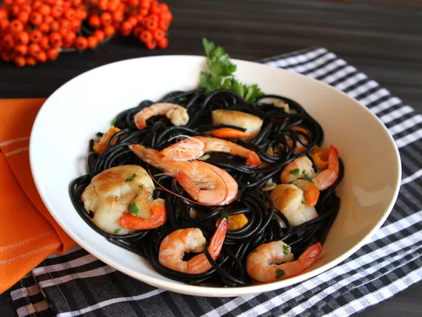

Squid Ink Pasta

Description
This Italian dish was featured in Jojo's Bizarre Adventure
Part 2 when Joseph Joestar visits Italy for the first time.
Although he did not find the appearance of it appealing he
found it to be delicious. He also infused the pasta with
Hamon as a way to "greet" Caesar Zeppelli.
Ingredients
- 1/4 cup olive oil
- 1 pound medium shrimp, shells removed and deveined (tails optional)
- 12 medium scallops
- 3 garlic cloves, thinly sliced
- 1/2 teaspoon red pepper flakes
- Kosher salt and freshly ground black pepper
- 3/4 cup dry white wine
- 1/3 cup ripe, chopped seeded tomato
- 1/2 cup chopped fresh parsley leaves
- 1/4 cup juice from 1 to 2 lemons
- 1 tablespoon unsalted butter
- 1 pound squid ink pasta
Steps
- Bring a large pot of salted water to a boil. Heat oil in
a heavy skillet over medium-high heat until lightly
smoking. Add shrimp and sauté until opaque, about 1
minute each side. Remove to a plate.
- Reheat oil and cook the scallops until they too are
opaque and lightly browned, 2 minutes each side.
Remove scallops to plate with shrimp and add garlic
to pan. Cook, stirring often, until golden, about
2 minutes.
- Add red pepper flakes, black pepper, salt, wine,
tomato, and parsley, and cook over high heat until
reduced by half, 8 to 10 minutes. Add lemon juice
and butter and return seafood to the skillet, mixing
well. Keep warm.
- Cook pasta in the pot of salted water until it is al
dente. Drain well, return to the pot along with the
seafood. Toss well, and serve immediately.